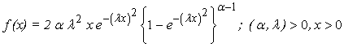
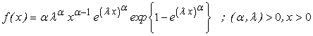
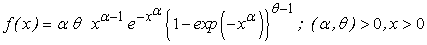
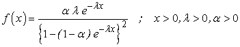
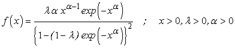
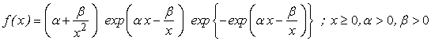
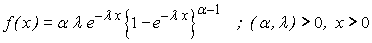
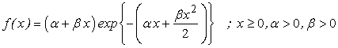
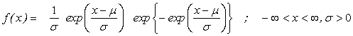
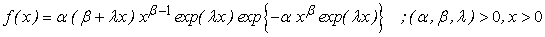

![[distributions0]](distributions0.bmp) Reliability Distributions
Reliability Distributions
Birnbaum-Saunders [top] [example]
The Birnbaum-Saunders distribution is defined by the pdf
![[distributions2]](distributions2.bmp)
where alpha and beta are shape parameters, Birnabaum and Saunders(1969). In the BUGS language it is used as
x ~ dbs(alpha, beta)
Burr X [top] [example]
The Burr X distribution is defined by the pdf

where alpha is a shape parameter and lambda is a scale parameter, Surles and Padgett (2005) . In the Bugs language it is used as
x ~ dburrX(alpha, lambda)
Burr XII [top] [example]
The Burr XII distribution is defined by the pdf
![[distributions4]](distributions4.bmp)
where alpha and beta are shape parameters, Klugman et al. (2004) . In the BUGS language it is used as
x ~ dburrXII(alpha, beta)
Exponential Power [top] [example]
The Exponential power distribution is defined by the pdf

where alpha is a shape parameter and lambda a scale parameter, Smith and Bain (1975) . In the BUGS language it is used as
x ~ dexp.power(alpha, lambda)
Exponentiated Weibull [top] [example]
The Exponentiated Weibul distribution is defined by the pdf

where alpha and theta are shape parameters, Mudholkar and Srivastava (1993) . In the BUGS language it is used as
x ~ dexp.weib(alpha, theta)
Extended Exponential [top] [example]
The Extended Exponential distribution is defined by the pdf

where alpha is a shape parameter and lambda is a tilt parameter, Marshall and Olkin (1997, 2007) . In the BUGS language it is used as
x ~ dext.exp(alpha, lambda)
Extended Weibull [top] [example]
The Extended Weibull distribution is dewfined by the pdf

where alpha is a shape parameter and lambda is a tilt parameter, Marshall and Olkin (1997, 2007) . In the BUGS language it is used as
x ~ dext.weib(alpha, lambda)
Flexible Weibull [top] [example]
The Flexible Weibull distribution is dewfined by the pdf

where alpha and beta are shape parameters, Bebbington et al. (2007) . In the BUGS language it is used as
x ~ dflex.weib(alpha, beta)
Generalized Exponential [top] [example]
The Generalized Exponential distribution is defined by the pdf

where alpha is a shape parameter and lambda is a scale parameter, Gupta and Kundu (1999, 2001) . In the BUGS language it is used as
x ~ dgen.exp(alpha, lambda)
Generalized Power Webull [top] [example]
The Generalized Power Weibull distribution is defined by the pdf
![[distributions11]](distributions11.bmp)
where alpha and theta are shape parameters, Nikulin and Haghighi (2006) . In the BUGS language it is used as
x ~ dgp.weib(alpha, theta)
Gompertz [top] [example]
The Gompertz distribution is defined by the pdf
![[distributions12]](distributions12.bmp)
where alpha and theta are shape parameters, Marshall and Olkin (2007) . In the BUGS language it is used as
x ~ dgpz(alpha, theta)
Gumbel [top] [example]
The Gumbel distribution is defined by the pdf
![[distributions13]](distributions13.bmp)
where alpha is a location parameter and tau is a scale parameter, Marshall and Olkin (2007) . In the BUGS language it is used as
x ~ dgumbel(alpha, tau)
Inverse Gaussian [top] [example]
The Inverse Gaussian distribution is defined by the pdf
![[distributions14]](distributions14.bmp)
where mu is a location parameter and lambda is a scale parameter, Chhikara and Folks (1977) . In the BUGS language it is used as
x ~ dinv.gauss(mu, lambda)
Inverse Weibull [top] [example]
The Inverse Weibull distribution is defined by the pdf
![[distributions15]](distributions15.bmp)
where beta is a shape parameter and lambda is a scale parameter, Jiang and Murthy (2001) . In the BUGS language it is used as
x ~ dinv.weib(beta, lambda)
Linear Failure Rate [top] [example]
The Linear Failure Rate distribution is defined by the pdf

where alpha and beta are shape parameters. Bain (1974) . In the BUGS language it is used as
x ~ dlin.fr(alpha, beta)
Logistic Exponential [top] [example]
The Logistic Exponential distribution is defined by the pdf
![[distributions17]](distributions17.bmp)
where alpha is a shape parameter and lambda is a scale parameter, Lan and Leemis (2008) . In the BUGS language it is used as
x ~ dlogistic.exp(alpha, lambda)
Log-Logistic [top] [example]
The Log-Logistic distribution is defined by the pdf
![[distributions18]](distributions18.bmp)
where beta is a shape parameter and theta is a scale parameter, Lawless (2003) . In the BUGS language it is used as
x ~ dlog.logis(beta, theta)
Log-Weibull [top] [example]
The Log-Weibull distribution is defined by the pdf

where mu is a location parameter and sigma is a scale parameter, Murthy et al. (2004). In the BUGS language it is used as
x ~ dlog.weib(mu, sigma)
Modified Weibull [top] [example]
The Modified Weibull distribution is defined by the pdf

where alpha and beta are shape parameters and lambda is a scale parameter, Lai et al..(2003) . In the BUGS language it is used as
x ~ dweib.modified(alpha, beta, lambda)